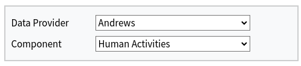
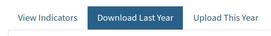

mermaid`
flowchart TD
subgraph <b></b>
direction LR
subgraph <i>Legend</i>
direction LR
L1(Web page tab) ~~~ L2(menu) ~~~ L3(Decision) ~~~ L4(Data) ~~~ L5(Action)
end
subgraph <br>
direction TB
Z1(CCIEA Uploader) --> B("<b>Start:</b> Choose Data Provider")
B --> Z(View Indicators)
B -.Rare: Data provider<br>has data in<br>more than one<br>component.-> E(Choose Component) .-> Z
Z --> D[Select Indicators and<br>examine metadata]
Z -. optional .-> K1{Download<br>previous<br>data files?}
D -->F{Metadata<br>need<br>updating?}
H --> ${meta_file_node} -- edit<br>metadata ---> G
K1-.Yes.-> H[Download Last Year] .-> ${data_file_node} -. view and<br>optionally update ..-> G
F --No--> G[Upload This year]
K1 -.No.-> G
F --Yes--> H[Download Last Year]
G --> I{What are you<br>uploading?} --> J[/Updated<br>metadata/] -------->T[Upload file to Google Drive]
I--> K[/Indicator<br>time series/]--> O{Data file<br>name in<br>conventions<br>list?}
I--> V[/other types<br>of files/] --Upload plots,<br>indicator text summaries,<br>other ESR files-------->T
O --Yes--> P[Browse your<br>file system<br>for data file<br>-> csv only]
O --No--> Q[rename file] --> P
P --> R[/View data in uploader table/] -->S{do file<br>checks pass?}
S --Yes--> T
S -- No --> U[Edit to<br>correct file<br>name or headers] --> T
T --> Y{Upload<br>another csv<br>data file?}--Yes--> G
Y --No--> W[<b>End:</b> return tomorrow<br>to view updated<br>data and metadata]
end
end
classDef top fill:#fff,stroke:#4682b4,stroke-width:4px,color:#000;
classDef htm fill:#4682b4,stroke:#333,stroke-width:2px,color:#fff;
classDef menu fill:#ffffc5,stroke:#333,stroke-width:2px,color:#000;
classDef data fill:#add8e6,stroke:#333,stroke-width:2px,color:#000;
classDef action fill:#ffcccb,stroke:#333,stroke-width:2px,color:#000;
classDef decision fill:#d4e6f9,stroke:#333,stroke-width:2px,color:#000;
class Z1 top
class Z,H,L,G,L1 htm
class B,E,D,T,P,W,X,L2 menu
class K1,F,I,O,S,Y,L3 decision
class J,K,M,N,R,V,L4 data
class Q,U,L5 action
linkStyle 4,5,8,10,16,19,22,23,26,29,30,31,34,36 stroke:#000,stroke-width:3px,color:black;
`CCIEA Uploader Flow Chart
Start: Choose a data provider at the top of the page (and a component if available)

Next: View Indicators
Select each indicator on the left of the page to see the current indicator metadata
- Is the metadata correct?
- Yes: there’s no need to download last year’s metadata
- No: go to “Download Last Year”, to download a csv file of the current metadata and edit as needed
Download Last Year: (as needed)

- Metadata: download and edit a csv file of your current metadata (as needed)
- Data: optionally download last year’s indicator files and manually update them, or use them as a template for this year
Upload This Year:
- Browse for csv files to upload
- Check your files to ensure they can be automatically ingested
- Click the Upload button to go to the chosen Data Provider’s Google Drive folder to upload metadata, data, and/or other types of files
End
A cron job runs every morning up update the metadata, indicators, amd uploader status.